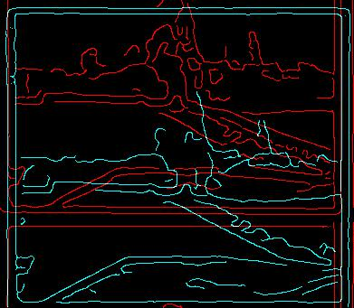
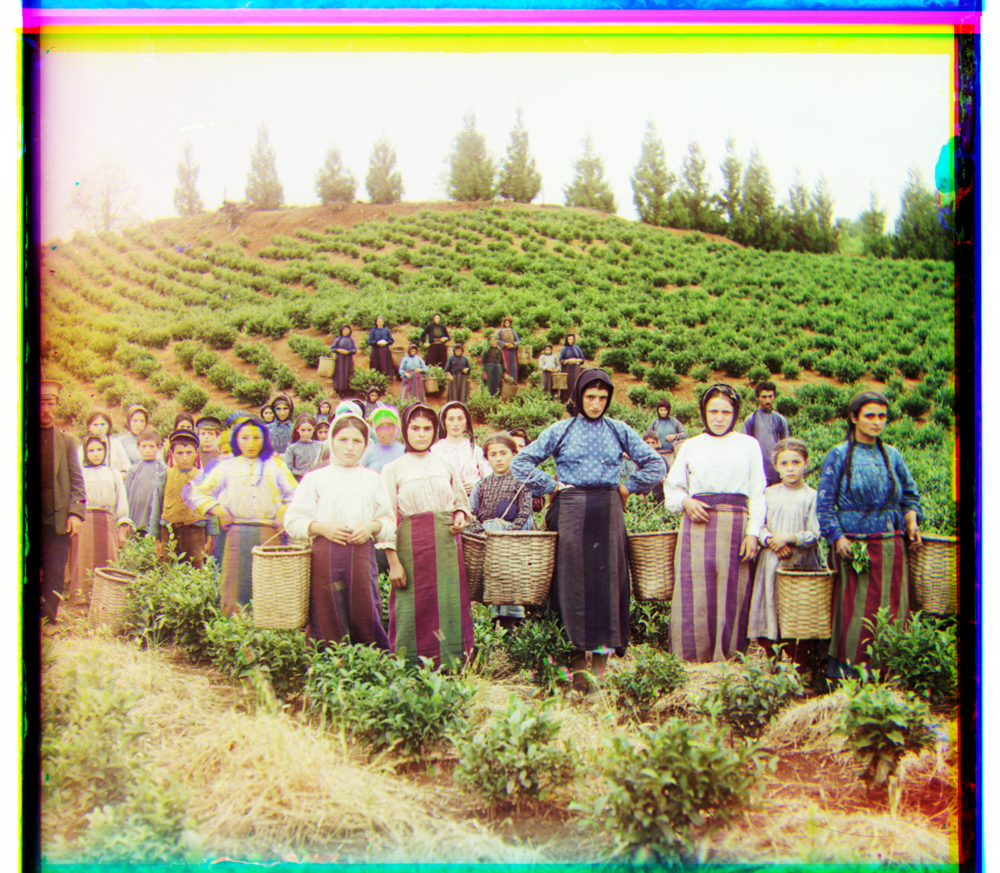

monastery.jpg (naive)

monastery.jpg (canny)
monastery.jpg (canny + gaussian)
|
monastery.jpg (naive) |
monastery.jpg (canny) |
monastery.jpg (canny + gaussian) |
 |

emir.jpg (naive) |

emir.jpg (canny) |

emir.jpg (canny + gaussian) |
cathedral.jpg and tobolsk.jpg where a 15x15
displacement search window seemed small enough to cover a large portion of the margins. In addition, a few pixels off
also did not seem to affect image quality. However, for the larger tif pictures, it seemed like there was no effect
at all.

cathedral.jpg Displacements: [ 1 -1] [ 7 -1] |

tobolsk.jpg Displacements [3 2] [6 3] |
church.tif, icon.tif, and sculpture.tif all looked well aligned:
|
church.jpg Displacements: [0 -5] [52 -6] |
icon.jpg Displacements [42 16] [89 22] |

sculpture.jpg Displacements [ 33 -11] [140 -26] |
emir.tif and harvesters.tif:

emir.jpg Displacements: [-3 7] [107 17] |
harvesters.jpg Displacements [118 -3] [257 -2] |
emir.tif I had a guess that the misalignment probably came from the largely solid blue-ish clothing.
Since that would saturate the blue channel around that region, it probably had a high correlation coefficient with
all the other channel at many displacements. In addition, I had a feeling that it could also be caused by the image
borders.
harvesters.tif, there were a lot of similar shapes in terms of the greenery and the people
wore similar color clothing which meant it was very easy for there to be close matches even though the displacement
might be significantly off from the actual displacement.
emir.tif and harvesters.tif had dramatically improved
alignment, some basic images like cathedral.jpg and monastery.jpg had a large regression.

emir.jpg Displacements: [49 23] [107 40] |
harvesters.jpg Displacements [60 18] [123 10] |
|
cathedral.jpg Displacements: [-175 -151] [-180 -1] |

monastery.jpg Displacements [-76 0] [-82 1] |
|  |
 |
 |
 |
|
|  |